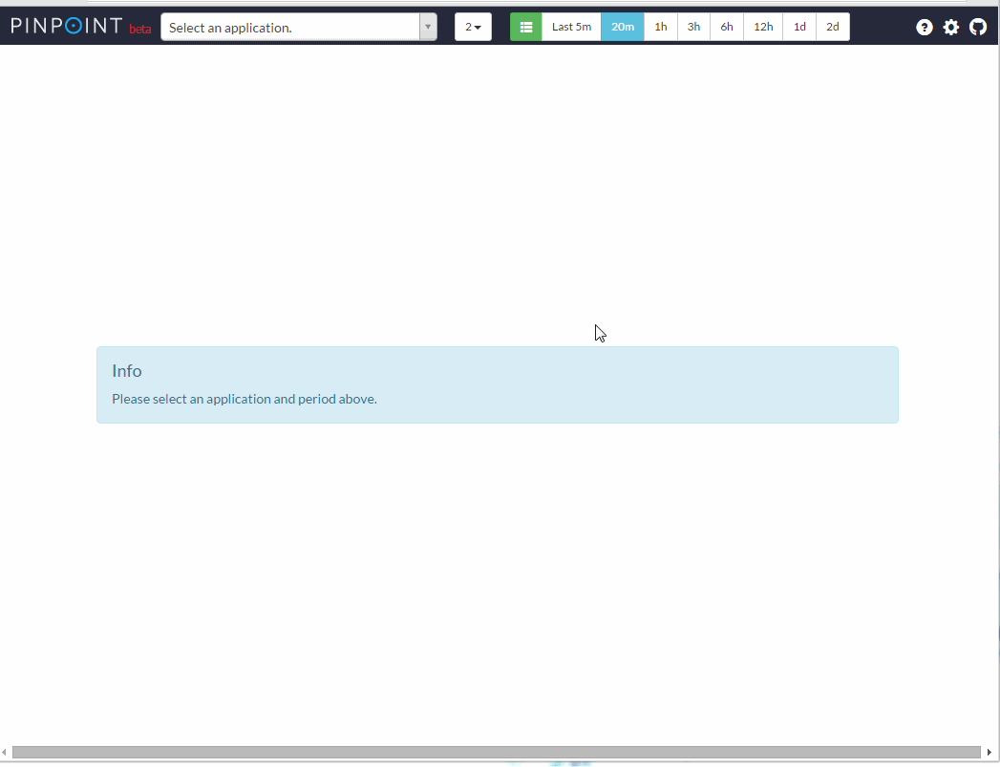

Alarm
Pinpoint-web periodically checks the applications’ status and triggers an alarm if certain pre-configured conditions (rules) are met.
These conditions are (by default) checked every 3 minutes by a background batch process within the Web module, using the last 5 minutes of data. Once a condition is met, the batch process sends an sms/email to users registered to a user group.
If an email/sms is sent everytime when a threshold is exceeded, we felt that alarm message would be spammable.
Therefore we decided to gradually increase the transmission frequency for alarms.
ex) If an alarm occurs continuously, transmission frequency is increased by a factor of two. 3 min -> 6min -> 12min -> 24min
1. User Guide
1) Configuration menu 
2) Registering users

3) Creating user groups

4) Adding users to user group

5) Setting alarm rules

Alarm Rules
SLOW COUNT
Triggered when the number of slow requests sent to the application exceeds the configured threshold.
SLOW RATE
Triggered when the percentage(%) of slow requests sent to the application exceeds the configured threshold.
ERROR COUNT
Triggered when the number of failed requests sent to the application exceeds the configured threshold.
ERROR RATE
Triggered when the percentage(%) of failed requests sent to the application exceeds the configured threshold.
TOTAL COUNT
Triggered when the number of all requests sent to the application exceeds the configured threshold.
SLOW COUNT TO CALLEE
Triggered when the number of slow requests sent by the application exceeds the configured threshold.
You must specify the domain or the address(ip, port) in the configuration UI's "Note..." box
ex) www.naver.com, 127.0.0.1:8080
SLOW RATE TO CALLEE
Triggered when the percentage(%) of slow requests sent by the application exceeds the configured threshold.
You must specify the domain or the address(ip, port) in the configuration UI's "Note..." box
ex) www.naver.com, 127.0.0.1:8080
ERROR COUNT TO CALLEE
Triggered when the number of failed requests sent by the application exceeds the configured threshold.
You must specify the domain or the address(ip, port) in the configuration UI's "Note..." box
ex) www.naver.com, 127.0.0.1:8080
ERROR RATE TO CALLEE
Triggered when the percentage(%) of failed requests sent by the application exceeds the configured threshold.
You must specify the domain or the address(ip, port) in the configuration UI's "Note..." box
ex) www.naver.com, 127.0.0.1:8080
TOTAL COUNT TO CALLEE
Triggered when the number of all requests sent by the application exceeds the configured threshold.
You must specify the domain or the address(ip, port) in the configuration UI's "Note..." box
ex) www.naver.com, 127.0.0.1:8080
HEAP USAGE RATE
Triggered when the application's heap usage(%) exceeds the configured threshold.
JVM CPU USAGE RATE
Triggered when the application's CPU usage(%) exceeds the configured threshold.
SYSTEM CPU USAGE RATE
Sends an alarm when the application's CPU usage(%) exceeds the configured threshold.
DATASOURCE CONNECTION USAGE RATE
Triggered when the application's DataSource connection usage(%) exceeds the configured threshold.
FILE DESCRIPTOR COUNT
Sends an alarm when the number of open file descriptors exceeds the configured threshold.
2. Configuration & Implementation
Alarms generated by Pinpoint can be configured to be sent over email and sms. Sending alarms over email is simple - you will simply need to configure the property file. Sending alarms over sms requires some implementation. Read on to find out how to do this.
1) Email configuration and sms implementation
A. Email alarm service
The class that sends emails is already registered as Spring bean in applicationContext-batch.xml.
<bean id="mailSender" class="com.navercorp.pinpoint.web.alarm.SpringSmtpMailSender">
<constructor-arg ref="batchConfiguration"/>
<constructor-arg ref="userGroupServiceImpl"/>
<constructor-arg ref="javaMailSenderImpl"/>
</bean>
<bean id="javaMailSenderImpl" class="org.springframework.mail.javamail.JavaMailSenderImpl">
<property name="host" value="${alarm.mail.server.url:}" />
<property name="port" value="${alarm.mail.server.port:587}" />
<property name="username" value="${alarm.mail.server.username:}" />
<property name="password" value="${alarm.mail.server.password:}" />
<property name="javaMailProperties">
<props>
<prop key="mail.smtp.from">${alarm.mail.sender.address:}</prop>
</props>
</property>
</bean>
You need to provide smtp server information and the address of the sender in batch.properties file.
pinpoint.url= #pinpoint-web server url
alarm.mail.server.url= #smtp server address
alarm.mail.server.port= #smtp server port
alarm.mail.server.username= #username for smtp server authentication
alarm.mail.server.password= #password for smtp server authentication
alarm.mail.sender.address= #sender's email address
ex)
pinpoint.url=http://pinpoint.com
alarm.mail.server.url=stmp.server.com
alarm.mail.server.port=587
alarm.mail.server.username=pinpoint
alarm.mail.server.password=pinpoint
alarm.mail.sender.address=pinpoint_operator@pinpoint.com
If you would like to implement your own mail sender, simply replace the SpringSmtpMailSender, JavaMailSenderImpl beans above with your own implementation that implements com.navercorp.pinpoint.web.alarm.MailSender interface.
public interface MailSender {
void sendEmail(AlarmChecker checker, int sequenceCount);
}
B. Sms alarm service
To send alarms over sms, you will need to implement your own sms sender by implementing com.navercorp.pinpoint.web.alarm.SmsSender interface.
If there is no SmsSender implementation, then alarms will not be sent over sms.
public interface SmsSender {
public void sendSms(AlarmChecker checker, int sequenceCount);
}
2) Configuring batch properties
batch.server.ip configuration is there to prevent concurrent batch operations when there are multiple pinpoint web servers. The batch is executed only if the server’s IP address is identical to the value set in batch.server.ip. (Setting this to 127.0.0.1 will start the batch in all the web servers)
batch.server.ip=X.X.X.X
3) Configuring MYSQL
Set up a MYSQL server and configure connection information in jdbc.properties file.
jdbc.driverClassName=com.mysql.jdbc.Driver
jdbc.url=jdbc:mysql://localhost:13306/pinpoint?characterEncoding=UTF-8
jdbc.username=admin
jdbc.password=admin
Create tables by running CreateTableStatement-mysql.sql, and SpringBatchJobRepositorySchema-mysql.sql.
4) Add batch to spring profile option
Add batch to the spring profile option when running pinpoint-web.
-Dspring.profiles.active=local,batch
OR
-Dspring.profiles.active=release,batch
4. Others
1) You may start the alarm batch in a separate process - Simply start the spring batch job using the applicationContext-alarmJob.xml file inside the Pinpoint-web module.
2) You may change the batch execution period by modifying the cron expression in applicationContext-batch-schedule.xml file
<task:scheduled-tasks scheduler="scheduler">
<task:scheduled ref="batchJobLauncher" method="alarmJob" cron="0 0/3 * * * *" />
</task:scheduled-tasks>
3) Ways to improve alarm batch performance - The alarm batch was designed to run concurrently. If you have a lot of applications with alarms registered, you may increase the size of the executor’s thread pool by modifying pool-size in applicationContext-batch.xml file.
Note that increasing this value will result in higher resource usage.
<task:executor id="poolTaskExecutorForPartition" pool-size="1" />
If there are a lot of alarms registered to applications, you may set the alarmStep registered in applicationContext-batch.xml file to run concurrently.
<step id="alarmStep" xmlns="http://www.springframework.org/schema/batch">
<tasklet task-executor="poolTaskExecutorForStep" throttle-limit="3">
<chunk reader="reader" processor="processor" writer="writer" commit-interval="1"/>
</tasklet>
</step>
<task:executor id="poolTaskExecutorForStep" pool-size="10" />
4) use quickstart’s web -
Pinpoint Web uses Mysql to persist users, user groups, and alarm configurations.
However Quickstart uses MockDAO to reduce memory usage.
Therefore if you want to use Mysql for Quickstart, please refer to Pinpoint Web’s applicationContext-dao-config.xml
, jdbc.properties.
Alarm
pinpoint-web 서버에서 application 상태를 주기적으로 체크하여 application 상태의 수치가 임계치를 초과할 경우 사용자에게 알람을 전송하는 기능을 제공한다.
application 상태 값이 사용자가 설정한 임계치를 초과하는 지 판단하는 batch는 pinpoint-web 서버내에서 background로 동작 된다. alarm batch는 기본적으로 3분에 한번씩 동작이 된다. 최근 5분동안의 데이터를 수집해서 alarm 조건을 만족하면 user group에 속한 user 들에게 sms /email을 전송한다.
연속적으로 알람 조건이 임계치를 초과한 경우에 매번 sms/email를 전송하지 않습니다.
알람 조건이 만족할때마다 매번 sms/email이 전송되는것은 오히려 방해가 된다고 생각하기 때문입니다. 그래서 연속해서 알람이 발생할 경우 sms/email 전송 주기가 점증적으로 증가됩니다.
예) 알람이 연속해서 발생할 경우, 전송 주기는 3분 -> 6분 -> 12분 -> 24분 으로 증가합니다.
1. Alarm 기능 사용 방법
1) 설정 화면으로 이동
2) user를 등록
3) userGroup을 생성
4) userGroup에 member를 등록
5) alarm rule을 등록
alarm rule에 대한 설명은 아래를 참고하시오.
SLOW COUNT
외부에서 application을 호출한 요청 중에 외부서버로 응답을 늦게 준 요청의 개수가 임계치를 초과한 경우 알람이 전송된다.
SLOW RATE
외부에서 application을 호출한 요청 중에 외부서버로 응답을 늦게 준 요청의 비율(%)이 임계치를 초과한 경우 알람이 전송된다.
ERROR COUNT
외부에서 application을 호출한 요청 중에 에러가 발생한 요청의 개수가 임계치를 초과한 경우 알람이 전송된다.
ERROR RATE
외부에서 application을 호출한 요청 중에 에러가 발생한 요청의 비율(%)이 임계치를 초과한 경우 알람이 전송된다.
TOTAL COUNT
외부에서 application을 호출한 요청 개수가 임계치를 초과한 경우 알람이 전송된다.
SLOW COUNT TO CALLEE
application 내에서 외부서버를 호출한 요청 중 slow 호출의 개수가 임계치를 초과한 경우 알람이 전송된다.
설정 화면의 Note 항목에 외부서버의 도메인 이나 주소(ip, port)를 입력해야 합니다. ex) naver.com, 127.0.0.1:8080
SLOW RATE TO CALLEE
application 내에서 외부서버를 호출한 요청 중 slow 호출의 비율(%)이 임계치를 초과한 경우 알람이 전송된다.
설정 화면의 Note 항목에 외부서버의 도메인 이나 주소(ip, port)를 입력해야 합니다. ex) naver.com, 127.0.0.1:8080
ERROR COUNT TO CALLEE
application 내에서 외부서버를 호출한 요청 중 error 가 발생한 호출의 개수가 임계치를 초과한 경우 알람이 전송된다.
설정 화면의 Note 항목에 외부서버의 도메인 이나 주소(ip, port)를 입력해야 합니다. ex) naver.com, 127.0.0.1:8080
ERROR RATE TO CALLEE
application 내에서 외부서버를 호출한 요청 중 error 가 발생한 호출의 비율이 임계치를 초과한 경우 알람이 전송된다.
설정 화면의 Note 항목에 외부서버의 도메인 이나 주소(ip, port)를 입력해야 합니다. ex) naver.com, 127.0.0.1:8080
TOTAL COUNT TO CALLEE
application 내에서 외부서버를 호출한 요청의 개수가 임계치를 초과한 경우 알람이 전송된다.
설정 화면의 Note 항목에 외부서버의 도메인 이나 주소(ip, port)를 입력해야 합니다. ex) naver.com, 127.0.0.1:8080
HEAP USAGE RATE
heap의 사용률이 임계치를 초과한 경우 알람이 전송된다.
JVM CPU USAGE RATE
applicaiton의 CPU 사용률이 임계치를 초과한 경우 알람이 전송된다.
SYSTEM CPU USAGE RATE
서버의 CPU 사용률이 임계치를 초과한 경우 알람이 전송된다.
DATASOURCE CONNECTION USAGE RATE
applicaiton의 DataSource내의 Connection 사용률이 임계치를 초과한 경우 알람이 전송된다.
FILE DESCRIPTOR COUNT
열려있는 File Descriptor 개수가 임계치를 초가한 경우 알람이 전송된다.
2. 설정 및 구현 방법
email과 sms로 알람을 전송을 할 수 있다. email로 알람을 설정만 추가해면 기능을 사용할수 있고, sms 전송을 하기 위해서는 직접 전송 로직을 구현해야한다.
1) email/sms 전송 class 설정 및 구현
A. email 전송
applicationContext-batch.xml파일에 email을 전송하는 class가 기본으로 bean으로 등록 되어있다.
<bean id="mailSender" class="com.navercorp.pinpoint.web.alarm.SpringSmtpMailSender">
<constructor-arg ref="batchConfiguration"/>
<constructor-arg ref="userGroupServiceImpl"/>
<constructor-arg ref="javaMailSenderImpl"/>
</bean>
<bean id="javaMailSenderImpl" class="org.springframework.mail.javamail.JavaMailSenderImpl">
<property name="host" value="${alarm.mail.server.url:}" />
<property name="port" value="${alarm.mail.server.port:587}" />
<property name="username" value="${alarm.mail.server.username:}" />
<property name="password" value="${alarm.mail.server.password:}" />
<property name="javaMailProperties">
<props>
<prop key="mail.smtp.from">${alarm.mail.sender.address:}</prop>
</props>
</property>
</bean>
email 전송 기능을 사용하기 위해서 batch.properties파일에 smtp 서버 정보와 email에 포함될 여러 정보를 설정한다.
pinpoint.url= #pinpoint-web 서버의 url
alarm.mail.server.url= #smtp 서버 주소
alarm.mail.server.port= #smtp 서버 port
alarm.mail.server.username= #smtp 인증을 위한 userName
alarm.mail.server.password= #smtp 인증을 위한 password
alarm.mail.sender.address= # 송신자 email
ex)
pinpoint.url=http://pinpoint.com
alarm.mail.server.url=stmp.server.com
alarm.mail.server.port=587
alarm.mail.server.username=pinpoint
alarm.mail.server.password=pinpoint
alarm.mail.sender.address=pinpoint_operator@pinpoint.com
만약 email 전송 로직을 직접 구현하고 싶다면 위의 SpringSmtpMailSender, JavaMailSenderImpl bean 선언을 제거하고 com.navercorp.pinpoint.web.alarm.MailSender interface를 구현해서 bean을 등록하면 된다.
public interface MailSender {
void sendEmail(AlarmChecker checker, int sequenceCount);
}
B. sms 전송
sms를 하려면 com.navercorp.pinpoint.web.alarm.SmsSender interface를 구현하고 bean으로 등록하면 된다. 반드시 sms 전송 로직을 구현할 필요는 없고, SmsSender 구현 class가 없는 경우 sms는 전송되지 않는다.
public interface SmsSender {
public void sendSms(AlarmChecker checker, int sequenceCount);
}
2) batch properties 설정
pinpoint web서버가 2대 이상일 경우에 동일한 batch가 여러대의 서버에서 동시에 실행되는것을 방지하기 위한 기능이다. batch.properties 파일에 설정한 ip의 값과 pinpoint-web 서버의 ip가 일치할 경우에만 batch가 동작이 된다. (127.0.0.1을 설정한 경우 모든 pinpoint web에서 batch가 동작 된다.)
batch.server.ip=X.X.X.X
3) MYSQL 서버 IP 주소 설정 & table 생성
Mysql 서버를 준비하고 jdbc.properties 파일에 접속 정보를 설정한다.
jdbc.driverClassName=com.mysql.jdbc.Driver
jdbc.url=jdbc:mysql://localhost:13306/pinpoint?characterEncoding=UTF-8
jdbc.username=admin
jdbc.password=admin
필요한 table 생성 - CreateTableStatement-mysql.sql, SpringBatchJobReositorySchema-mysql.sql
4) spring profile 옵션에 batch 추가
pinpoint-web 실행시 spring profile 옵션에 batch를 추가한다.
-Dspring.profiles.active=local,batch
OR
-Dspring.profiles.active=release,batch
3. 기타
1) alarm batch를 별도 프로세스로 실행하는 것도 가능하다. pinpoint-web 프로젝트의 applicationContext-alarmJob.xml 파일을 이용해서 spring batch job을 실행하면 된다. 실행 방법은 대한 구체적인 방법은 spirng batch 메뉴얼을 참고하자.
2) batch의 동작 주기를 조정하고 싶다면 applicationContext-batch-schedule.xml 파일의 cron expression을 수정하면 된다.
<task:scheduled-tasks scheduler="scheduler">
<task:scheduled ref="batchJobLauncher" method="alarmJob" cron="0 0/3 * * * *" />
</task:scheduled-tasks>
3) alarm batch 성능을 높이는 방법은 다음과 같다. alarm batch 성능 튜닝을 위해서 병렬로 동작이 가능하도록 구현을 해놨다. 그래서 아래에서 언급된 조건에 해당하는 경우 설정값을 조정한다면 성능을 향상 시킬수 있다. 단 병렬성을 높이면 리소스의 사용률이 높아지는것은 감안해야한다.
alarm이 등록된 application의 개수가 많다면 applicationContext-batch.xml 파일의 poolTaskExecutorForPartition의 pool size를 늘려주면 된다.
<task:executor id="poolTaskExecutorForPartition" pool-size="1" />
application 각각마다 등록된 alarm의 개수가 많다면 applicationContext-batch.xml 파일에 선언된 alarmStep이 병렬로 동작되도록 설정하면 된다.
<step id="alarmStep" xmlns="http://www.springframework.org/schema/batch">
<tasklet task-executor="poolTaskExecutorForStep" throttle-limit="3">
<chunk reader="reader" processor="processor" writer="writer" commit-interval="1"/>
</tasklet>
</step>
<task:executor id="poolTaskExecutorForStep" pool-size="10" />
4) quickstart web을 사용한다면. pinpoint web은 mockDAO를 사용하기 때문에 pinpont web의 설정들을 참고해서 기능을 사용해야한다. applicationContext-dao-config.xml , jdbc.properties.